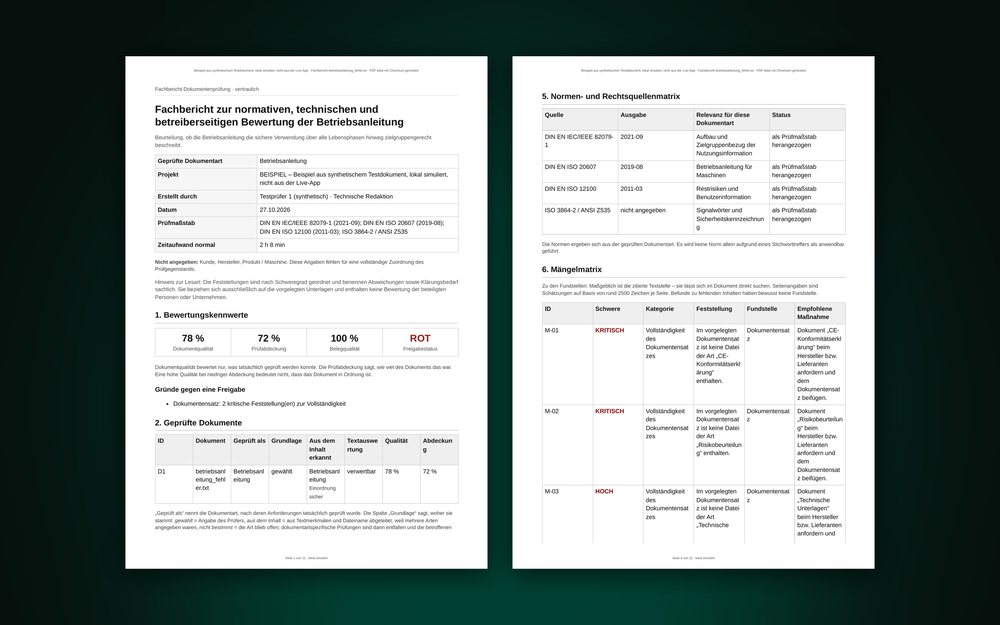

Technical Documentation · Software
614 One – document review by NAHX Technologies
Web app in Google Apps Script that pre-reviews document sets for their product and document type and produces a review report and a client report as PDF. Review criteria: Falk Heinzmann, technical writer. First pilot customer is FSH Documentation. Pictured: client report from a fictitious test document.
Flow
- Choose product and document type
- Upload documents (PDF, Word, TXT)
- Review by profile
- Confirm or reject findings
- Review and client report as PDF
- Starting point
- Technical documentation has to meet different standards and legal requirements depending on the product, from machinery to medical devices. Reviews were done by hand, with checklists, and differently by each reviewer.
- Challenge
- A pre-review that applies the right scope for each product and document type, reports every finding with severity, reason and recommendation, and keeps clear what the software checks and what a person has to assess.
- My contribution
- I develop most of the software, steered through several AI agents that review each other's work. Falk Heinzmann is responsible for the review content; he shapes which requirements the software covers and how understandable the results are.
- Approach
- Review profiles for 42 document types with chapters and references to standards, 14 selectable review areas, text recognition for scans, traffic light with blocking reasons. Every finding is confirmed, rejected or changed by an expert, with a reason; approval only when green and all findings are confirmed. The report does not state conformity.
- Technologies
- Google Apps Script (V8), Google Drive API with text recognition, Google Sheets as storage with audit log, HTML and JavaScript without a framework, PDF reports; 854 automated tests with Node.js.
StatusTested locally: 854 automated tests pass, five document types are backed by reference documents. The pilot with FSH Documentation is prepared but not yet approved; evidence from live operation is still pending.